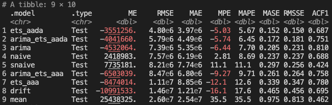

2024-10-08
If we want to create a forecast in R for the TSA Passenger data to predict passenger volumes in the future, we can use the tidyverts packages fable, tsibble, and feasts.
These packages apply tidy data principles to time series data and forecasting. They were coauthored by the forecasting great Rob Hyndman. If you are interested in learning more about forecasting, I highly recommend Rob Hyndman and George Athanasopoulos's fantastic textbook: Forecasting: Principles and Practice (3rd Edition) (FPP3), which uses these tidyverts packages and workflows.
The historical TSA Passenger data that we have looks like this:

There is clear seasonality in the data, and there has been an upward trend coming out of the Covid downturn.

The fable package provides several time series models to choose from. We can evaluate which models perform the best by breaking our data into separate train/test sets. We then fit each model on the training data, generate a forecast from each model over the test set time period, and we evaluate each model's forecast against our test set to measure accuracy.
We'll start with four simple baseline models that allow us to compare our more complex models against simple but still effective baselines. We'll use the ARIMA function to find the best fitting ARIMA model, and we'll try four different ETS models. We know that trend and seasonality are likely to continue, so we will limit ourselves to just these ETS models, but you could try others. Alternatively, the ETS() function can select the best-fitting ETS model for you, just like the ARIMA() function.
We recently learned that our models will likely perform best if we ignore pre-Covid data and just assume history begins at April 2020. So we will use that in our model selection and final forecasts here.
fit <- train |> model(
# Baseline models
mean = MEAN(passengers),
naive = NAIVE(passengers),
drift = NAIVE(passengers ~ drift()),
snaive = SNAIVE(passengers),
# tslm = TSLM(passengers ~ trend() + season()),
# Auto-ARIMA and Auto-ETS models
arima = ARIMA(passengers, stepwise=FALSE, approximation=FALSE),
# ets = ETS(passengers),
# Specify ETS models
ets_aaa = ETS(passengers ~ error('A') + trend('A') + season('A')),
ets_aada = ETS(passengers ~ error('A') + trend('Ad') + season('A')),
ets_aam = ETS(passengers ~ error('A') + trend('A') + season('M')),
ets_aadm = ETS(passengers ~ error('A') + trend('Ad') + season('M'))
)

Thankfully our ARIMA and ETS models do outperform our baselines! The arima model performs the best and ets_aada is second. The models with multiplicative seasonality don't perform as well and actually underperform some of our baselines.
One nice feature of fable is that it makes it very easy to combine or ensemble multiple forecast models. Hyndman and Athanasopoulos describe this as such:
"The results have been virtually unanimous: combining multiple forecasts leads to increased forecast accuracy. In many cases one can make dramatic performance improvements by simply averaging the forecasts."
Based on our results, we'll try creating combined forecasts of the arima model with each of the two best performing ETS models: ets_aada and ets_aaa.
# Create combined models
fcst <- fit |> mutate(
arima_ets_aaa = (arima + ets_aaa) / 2,
arima_ets_aada = (arima + ets_aada) / 2,
) |> forecast(h = months_to_forecast)
# View model forecast accuracy against test set
accuracy(fcst, df) |>
arrange(RMSE)

After adding in our two combined models, the plain ETS models still perform the best.
We can plot the forecasts from the top 5 models to see how they compare to the historical actuals:

Based on these results, I would pick either the top-performing ets_aada or the combined arima_ets_aada model. While the ets_aada model is more accurate compared to the test set right now, over the long term I would probably prefer to use an ensemble model. As I've been maintaining this data and working with these forecasts, the ARIMA and ETS models will occasionally swap places as the best performer, so long-term we'd probably benefit from using a combined model that takes both ARIMA and ETS approaches into account.
Another approach to time series model evaluation is cross validation. This is a little different from the cross validation you may have used in other machine learning contexts. With time series data, we start with an initial base set of only n historical data points, fit our models, calculate forecasts, and measure accuracy. We then repeat the process by adding one additional data point (or more) to the base set of historical data with each step, fit the moels, forecast, and measure accuracy. In each iteration we're forecasting one or more steps out. Prof. Hyndman uses this visualization below in his textbook to help explain the process. The blue dots are the base history we're using to fit our models, and the orange dots are the future points we're trying to estimate:
One neat benefit of this approach is that if we're forecasting more than one step ahead in each iteration we can see the average model accuracy across all of the CV sets at 1 to n steps out. As we'd expect, model accuracy gets worse the further out we try to forecast, but we can see how the models compare at different future forecast steps. The best performing model across the CV sets is the ETS(A,Ad,A) model, and the second best is the combination of ARIMA and ETS(A,Ad,A).

The total model accuracy across all CV steps and forecast periods is below. It's also possible to calculate the accuracy just for n specific forecast steps out if needed.
Based on what we've seen by evaluating different models with a train/test split and cross-validation, we know that the ARIMA and ETS(A,Ad,A) models tend to perform the best, along with the combination of the two. Ultimately, I would choose the combination of the two so that we can hopefully gain from the benefits of ensembling over the long term.
Let's perform a final forecast, fitting ARIMA and ETS(A,Ad,A) models on the full dataset and then combining them. The chart below shows the future forecast from October 2024 to December 2025 for the three models. We can see that the arima forecast is slightly lower and the ets_aada forecast is slightly higher. The combined model, being the average of the two, runs through the middle. The 80% and 95% prediction intervals are shown by default in the autoplot() function in the tidyverts packages. Both ETS and ARIMA models utlimately give very similar forecasts, and it looks like they're accurately capturing reasonable trend and seasonality.

Finally, let's plot just the point forecast of the final chosen combined model with the full history.

In this case, we're forecasting through the end of this year and through all of next year. Let's look at what the forecast is telling us the total annual growth will be in TSA passengers for this year and next.
# Calculate annual percent change in TSA Passengers
df |>
as_tibble() |>
mutate(Year = year(date)) |>
group_by(Year) |>
summarize(passengers = sum(passengers)) |>
arrange(Year) |>
mutate(pct_chg = percent((passengers / lag(passengers) - 1)))
The forecast is showing 2024 will finish the year up +4.9% and 2025 will grow +3.8%, which sounds entirely reasonable.
# Standard packages
library(readr)
library(dplyr)
library(lubridate)
library(tidyr)
library(ggplot2)
library(scales)
library(forcats)
library(gt)
# Tidy time series packages
library(tsibble)
library(fable)
library(feasts)
# Read in and prepare data. Plot full history.
prepare_data <- function(){
# Read in data
df <- read_csv('tsa.csv')
tail(df)
# Sum passengers by month
df <- df |>
group_by(date = floor_date(date, "month")) |>
summarise(passengers = sum(passengers)) |>
# Exclude any extra dates in the current month where we don't have a
# full month of data
filter(date < floor_date(today(), "month"))
# Convert data to tsibble
df <- df |> mutate(date = yearmonth(date))
df <- df |> as_tsibble(index = date)
# Plot data and return tsibble dataframe
autoplot(df, passengers) +
ggtitle("TSA Passenger History") +
scale_y_continuous(
name="Passengers",
labels=label_number(scale_cut = cut_short_scale())
) +
theme(axis.title.x = element_blank())
ggsave("images/tsa-passenger-history.png", width=16.18, height=10, units='cm')
return(df)
}
# Time series decomposition
stl_decomposition <- function(df){
dcmp <- df |>
model(stl = STL(passengers))
components(dcmp) |>
autoplot() +
scale_y_continuous(
name="Passengers",
labels=label_number(scale_cut = cut_short_scale())
)
ggsave("images/time-series-decomposition.png", width=16.18, height=10, units='cm')
}
# Compare models using train test split
train_test_models <- function(df){
# The models will be more accurate if we ignore pre-Covid
df <- df |> filter_index("2020-04" ~ .)
# Split data into train/test sets
size_of_data <- nrow(df)
size_of_test <- round(size_of_data * 0.15)
train <- df |> slice_head(n = size_of_data - size_of_test)
test <- df |> slice_tail(n = size_of_test)
months_to_forecast <- nrow(test)
# Forecast with fable
fit <- train |> model(
# Baseline models
mean = MEAN(passengers),
naive = NAIVE(passengers),
drift = NAIVE(passengers ~ drift()),
snaive = SNAIVE(passengers),
# tslm = TSLM(passengers ~ trend() + season()),
# Auto-ARIMA and Auto-ETS models
arima = ARIMA(passengers, stepwise=FALSE, approximation=FALSE),
# ets = ETS(passengers),
# Specify ETS models
ets_aaa = ETS(passengers ~ error('A') + trend('A') + season('A')),
ets_aada = ETS(passengers ~ error('A') + trend('Ad') + season('A')),
ets_aam = ETS(passengers ~ error('A') + trend('A') + season('M')),
ets_aadm = ETS(passengers ~ error('A') + trend('Ad') + season('M'))
)
# Generate forecasts
fcst <- fit |> forecast(h = months_to_forecast)
# View model forecast accuracy against test set
accuracy(fcst, df) |>
arrange(RMSE) |>
print()
# Create combined models
fcst <- fit |> mutate(
arima_ets_aaa = (arima + ets_aaa) / 2,
arima_ets_aada = (arima + ets_aada) / 2,
) |> forecast(h = months_to_forecast)
# View model forecast accuracy against test set
accuracy(fcst, df) |>
arrange(RMSE) |>
print()
# Plot results
# autoplot(fcst, df, level = NULL)
autoplot(filter(fcst, .model %in% c(
'arima',
'ets_aaa',
'ets_aada',
'arima_ets_aaa',
'arima_ets_aada'
)), df, level = NULL) +
ggtitle("Top Forecast Models by RMSE on TSA Passenger Test Data") +
scale_y_continuous(
name="Passengers",
labels=label_number(scale_cut = cut_short_scale())
) +
theme(axis.title.x = element_blank())
ggsave("images/train-test-top-forecast-models.png", width=16.18, height=10, units='cm')
}
# Compare models using cross validation
perform_cross_validation <- function(df){
df_tr <- df |>
filter_index("2020-04" ~ .) |>
# We need at least two years of data in order to fit the seasonal ETS models
stretch_tsibble(.init=24, .step=1) |>
# We want to test 12 months out, so the latest test set
# can only have data through August 2023. This remove the
# last 12 monthly test sets.
filter(!(.id %in% tail(unique(.id), 12)))
fit <- df_tr |> model(
# Baseline models
mean = MEAN(passengers),
naive = NAIVE(passengers),
drift = NAIVE(passengers ~ drift()),
snaive = SNAIVE(passengers),
# tslm = TSLM(passengers ~ trend() + season()),
# Auto-ARIMA and Auto-ETS models
arima = ARIMA(passengers, stepwise=FALSE, approximation=FALSE),
# ets = ETS(passengers),
# Additive error models
# ets_ann = ETS(passengers ~ error('A') + trend('N') + season('N')),
# ets_aan = ETS(passengers ~ error('A') + trend('A') + season('N')),
# ets_aadn = ETS(passengers ~ error('A') + trend('Ad') + season('N')),
# ets_ana = ETS(passengers ~ error('A') + trend('N') + season('A')),
ets_aaa = ETS(passengers ~ error('A') + trend('A') + season('A')),
ets_aada = ETS(passengers ~ error('A') + trend('Ad') + season('A')),
# # ets_anm = ETS(passengers ~ error('A') + trend('N') + season('M')),
# ets_aam = ETS(passengers ~ error('A') + trend('A') + season('M')),
# ets_aadm = ETS(passengers ~ error('A') + trend('Ad') + season('M'))
) |> mutate(
arima_ets_aaa = (arima + ets_aaa) / 2,
arima_ets_aada = (arima + ets_aada) / 2,
# arima_ets_aam = (arima + ets_aam) / 2,
# arima_ets_aadm = (arima + ets_aadm) / 2
# # arima_ets = (arima + ets) / 2,
# arima_ets_ann = (arima + ets_ann) / 2,
# arima_ets_aan = (arima + ets_aan) / 2,
# arima_ets_aadn = (arima + ets_aadn) / 2,
# arima_ets_ana = (arima + ets_ana) / 2,
)
fcst <- fit |>
forecast(h = 12)|>
group_by(.id, .model) |>
mutate(h = row_number()) |>
ungroup() |>
as_fable(response = "passengers", distribution = passengers)
# Print model accuracy
accuracy(fcst, df) |> arrange(RMSE) |> print()
# accuracy(filter(fcst, h == 12), df) |> arrange(RMSE)
# accuracy(filter(fcst, h == 1), df) |> arrange(RMSE)
# accuracy(fcst |> group_by(h), df) |> print(n=10000)
# Plot forecast accuracy by months out
accuracy(fcst |> group_by(h), df) |>
filter(!(.model %in% c(
'drift',
'mean',
'naive',
'snaive',
'tslm'
))) |>
ggplot(mapping = aes(x = h, y = RMSE, color = .model)) +
geom_line() +
labs(
title = "TSA Passenger History",
x = "Forecast RMSE N Months Out"
) +
scale_y_continuous(
name="RMSE",
labels=label_number(scale_cut = cut_short_scale())
) +
scale_x_continuous(
breaks = seq(1, 12)
# breaks=breaks_pretty()
) +
theme(panel.grid.minor = element_blank())
ggsave("images/cross-validation-forecast-error.png", width=16.18, height=10, units='cm')
}
# Forecast data using chosen model
final_forecast <- function(df){
# Forecast data using chosen models
# The models will be more accurate if we ignore pre-Covid
df_hist <- df
df <- df |> filter_index("2020-04" ~ .)
# Find number of months to forecast
months_to_forecast <- lubridate::interval(
ym(max(df$date)) + months(1), ymd('2026-01-01')
) %/% months(1)
# Forecast with fable
fit <- df |> model(
arima = ARIMA(passengers, stepwise=FALSE, approximation=FALSE),
ets_aada = ETS(passengers ~ error('A') + trend('Ad') + season('A')),
) |> mutate(
arima_ets_aada = (arima + ets_aada) / 2
)
fcst <- fit |> forecast(h = months_to_forecast)
# Plot all three model forecast lines
autoplot(fcst, df) +
ggtitle("TSA Passenger Forecast | ARIMA, ETS(A,Ad,A), and Combination") +
scale_y_continuous(
name="Passengers",
labels=label_number(scale_cut = cut_short_scale())
) +
theme(axis.title.x = element_blank())
ggsave("images/final-forecast-three-models.png", width=16.18, height=10, units='cm')
# Plot final combination model
fcst <- fcst |> filter(.model == 'arima_ets_aada')
autoplot(fcst, df_hist, level = NULL) +
ggtitle("TSA Passenger Forecast | Combination ARIMA + ETS(A,Ad,A) Model") +
scale_y_continuous(
name="Passengers",
labels=label_number(scale_cut = cut_short_scale())
) +
theme(axis.title.x = element_blank())
ggsave("images/final-forecast.png", width=16.18, height=10, units='cm')
return(fcst)
}
# Calculate annual percent change and plot monthly YoY percent change
calculate_annual_change <- function(df, fcst){
fcst <- fcst |>
as_tibble() |>
select(date, .mean) |>
rename(passengers = .mean)
df <- bind_rows(df, fcst)
# Calculate annual percent change in TSA Passengers
df |>
as_tibble() |>
mutate(Year = year(date)) |>
group_by(Year) |>
summarize(passengers = sum(passengers)) |>
arrange(Year) |>
mutate(pct_chg = percent((passengers / lag(passengers) - 1))) |>
print()
# Plot monthly year-over-year percent change trend
# monthly_chg <- df |>
# as_tibble() |>
# mutate(pct_chg = passengers / lag(passengers, 12) - 1)
# ggplot(monthly_chg, mapping = aes(x = date, y = pct_chg)) +
# geom_line()
}
# Run code
df <- prepare_data()
stl_decomposition(df)
train_test_models(df)
perform_cross_validation(df)
fcst <- final_forecast(df)
calculate_annual_change(df, fcst)